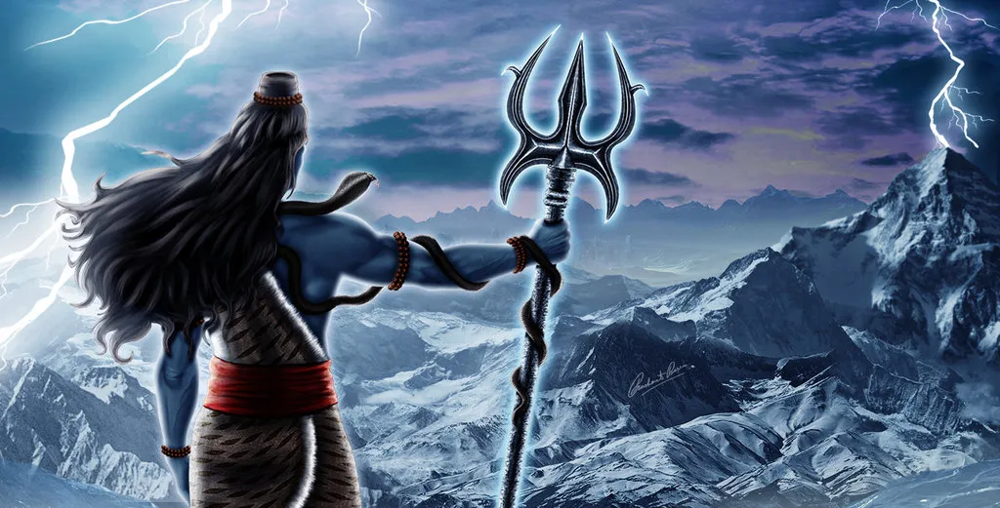
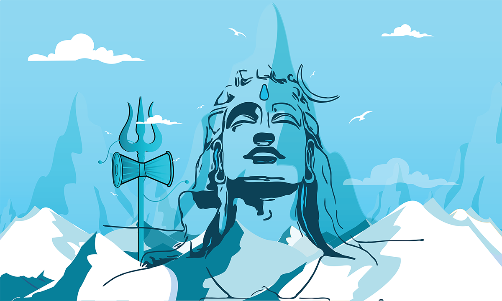
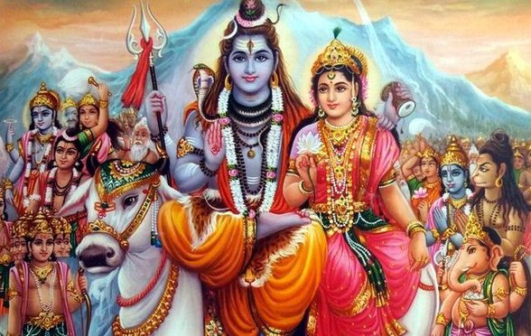

----------

Maha Shivratri is one of the important and biggest Hindu festivals dedicated
to Lord Shiva, a deity popularly associated with death and destruction.
The day commemorates the union of Shiva and Parvati. Every year, Maha Shivratri is
observed by Hindus across the nation with ultimate fun and enthusiasm.
Also known as Padmarajarathri or “The Special Night of Shiva'',
the devotees worship Lord Shiva on this day, observe a strict fast and
perform various religious activities to dispel darkness from their life.
History:

Most Hindus believe that Lord Shiva and Goddess Parvati united by marrying
on this day. People in North India celebrate the day as the wedding anniversary
of Shiva and Shakti. Shia is said to have entered into deep thought after the death
of Sati. Later, Sati reincarnated as Parvati and got married to Shiva.
Another story revolves around the great night of Shiva when Lord Shiva consumed poison produced during Samundra Manthan, or the churning of the ocean, as the poison was so powerful to destroy the whole world. Due to this, his throat turned blue, and he started being known as “Neelkantha,” i.e. someone with a blue throat.
Another popular story says that on this night, Lord Shiva performed the Tandava, a cosmic dance that leads to destruction. One story revolves around a great devotee of Lord Shiva who unknowingly dropped thousands of Bel Tree leaves on Shiva's linga and pleased Lord Shiva with his devotion.
Another story revolves around the great night of Shiva when Lord Shiva consumed poison produced during Samundra Manthan, or the churning of the ocean, as the poison was so powerful to destroy the whole world. Due to this, his throat turned blue, and he started being known as “Neelkantha,” i.e. someone with a blue throat.
Another popular story says that on this night, Lord Shiva performed the Tandava, a cosmic dance that leads to destruction. One story revolves around a great devotee of Lord Shiva who unknowingly dropped thousands of Bel Tree leaves on Shiva's linga and pleased Lord Shiva with his devotion.
Celebration:

The scientific reason for fasting on Shivaratri is that it gives the body a break
from hard-to-digest foods, further improving the digestive system. It also helps
us in getting a relaxed state of mind.
People get dressed and visit Shiva temples after an early morning bath to worship Lord Shiva by pouring water, milk, honey, flowers, sweets and curd on Shiva linga. On this day, you can witness a giant crowned in temples which itself sets magnificent views. The offerings take place the entire day and night by devotees to please him.
All the temples of Lord Shiva are adorned beautifully with garlands and flowers. You can hear Shivratri Bhajans all day and night in temples. The festival of Maha Shivratri is celebrated across different regions in India. People in Madhya Pradesh take a holy dip near Khajuraho, while in West Bengal, 4 Shiva lingams are made and worshipped by people throughout the night.
People get dressed and visit Shiva temples after an early morning bath to worship Lord Shiva by pouring water, milk, honey, flowers, sweets and curd on Shiva linga. On this day, you can witness a giant crowned in temples which itself sets magnificent views. The offerings take place the entire day and night by devotees to please him.
All the temples of Lord Shiva are adorned beautifully with garlands and flowers. You can hear Shivratri Bhajans all day and night in temples. The festival of Maha Shivratri is celebrated across different regions in India. People in Madhya Pradesh take a holy dip near Khajuraho, while in West Bengal, 4 Shiva lingams are made and worshipped by people throughout the night.